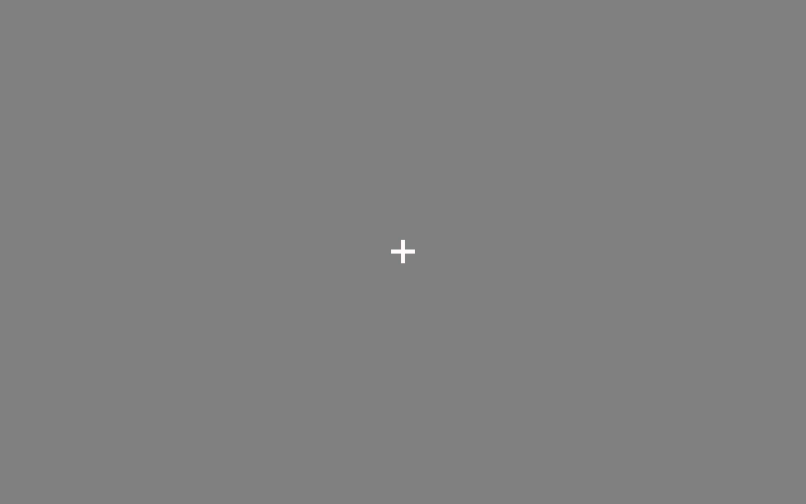
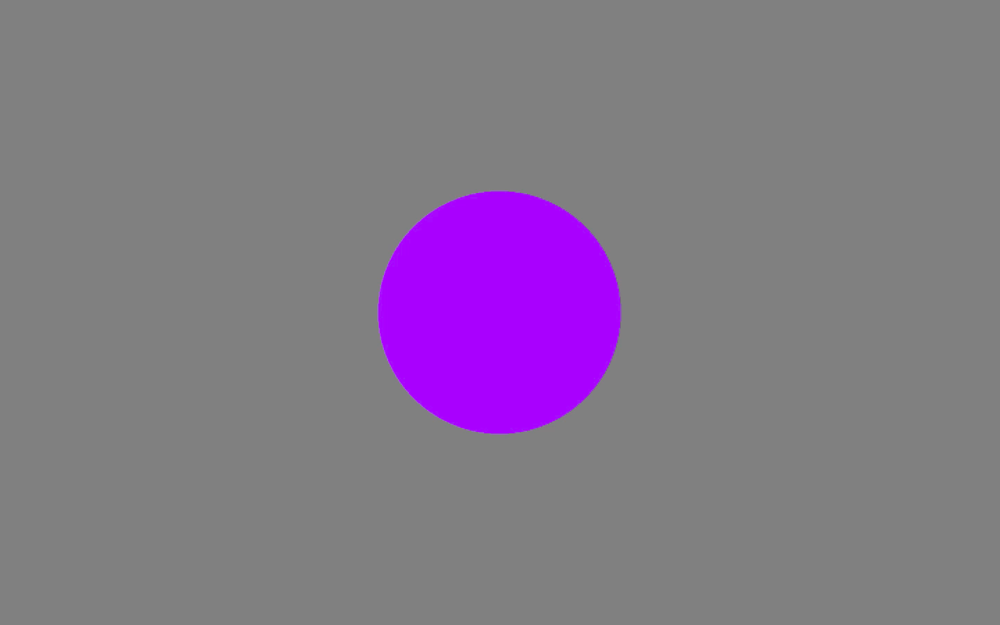
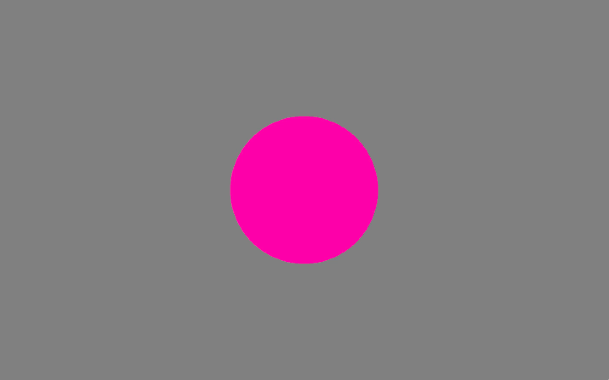
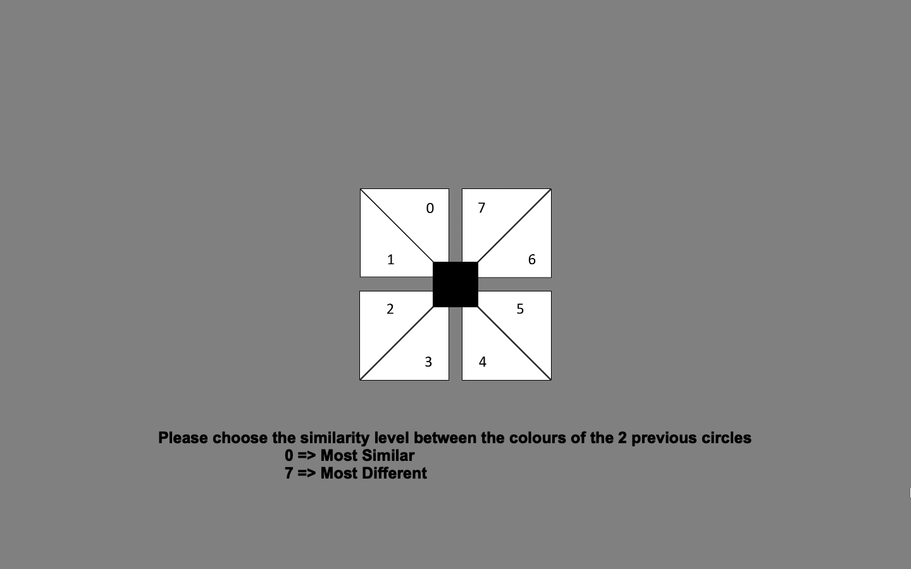
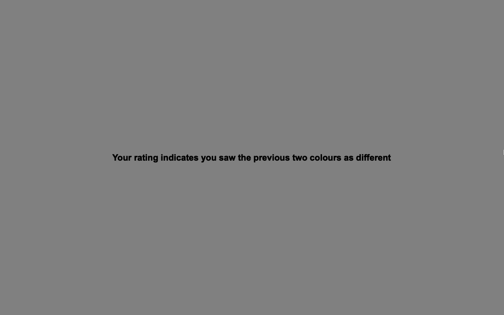
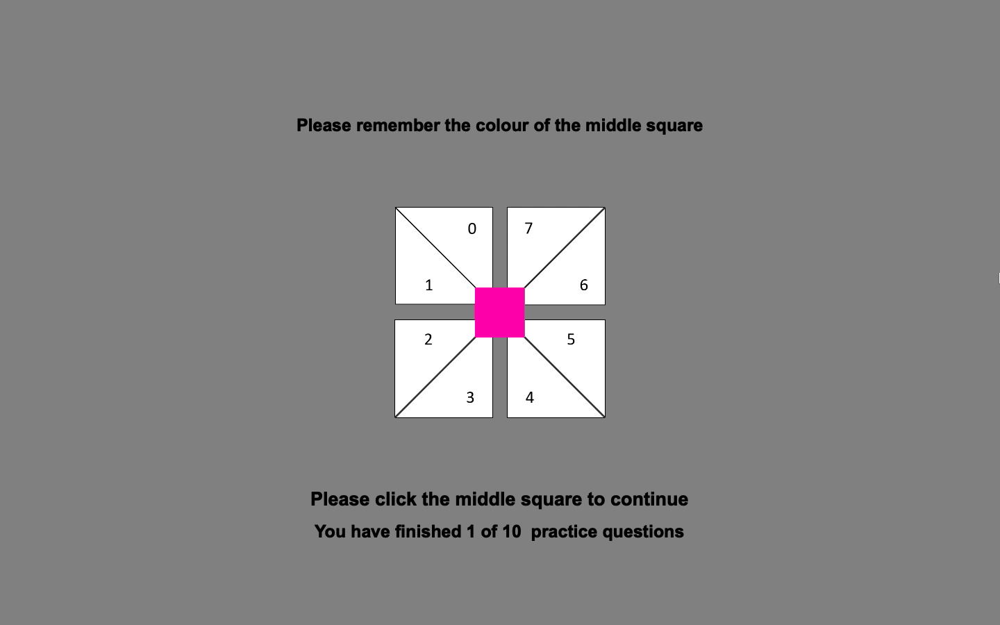
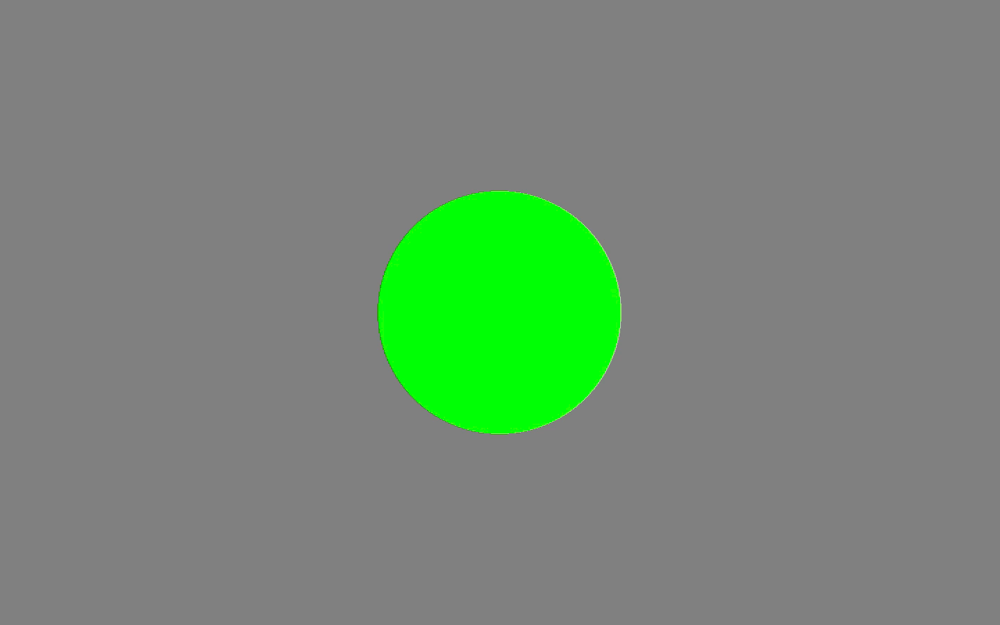

Practice Round
You are going to familiarise yourself with this experiment in
Instructions:
-
Two coloured circles will be briefly flashed onto the screen in sequence.
  
-
A response screen will then appear where you will be asked to rate the similarity between the colours of the two circles from a scale of 0 = most similar to 7 = most dissimilar.

-
You will then be given feedback based on your rating. This feedback will only be given in the practice trials.

-
After the feedback, the colour of the middle square will change into the colour that belonged to the circle presented most recently. You will need to remember this colour for the next trial.

-
Upon clicking the middle square, another coloured circle will be briefly flashed.

-
Another response screen will appear where you will be asked to rate the colour of the most recently presented circle (Green) against the colour of the circle from the previous trial (i.e., the colour of the middle square) that you were asked to remember (Pink).
- Steps 3 - 6 will then be repeated for the remaining trials.
If you are ready to start the practice trials, press [Space] to continue.